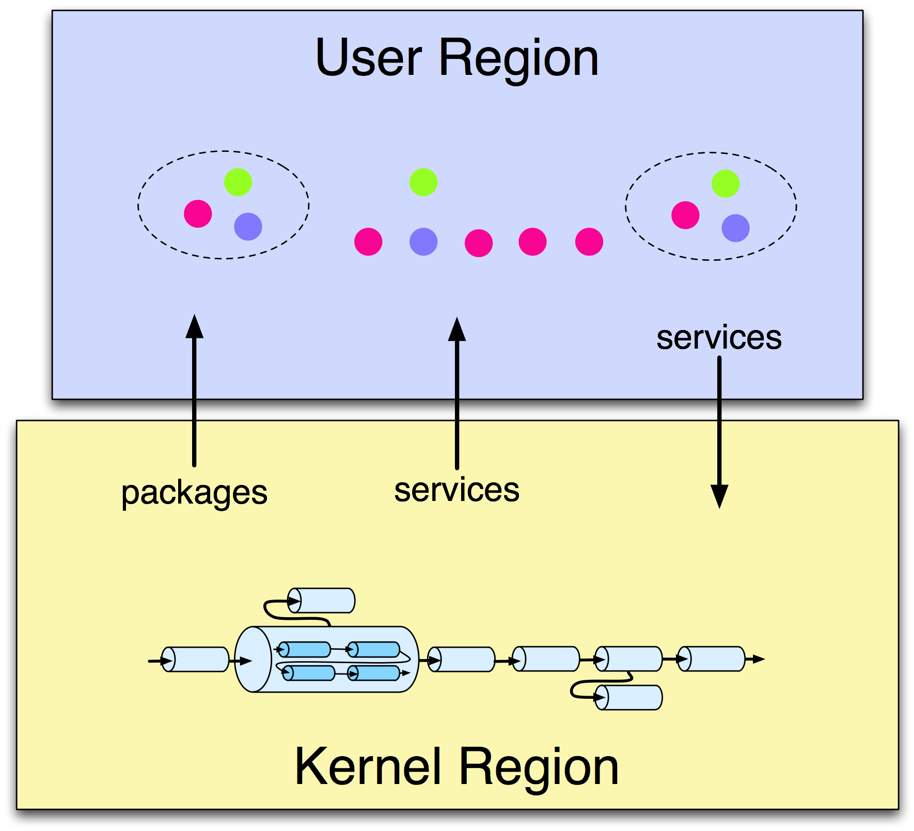

| Regions | ||
|---|---|---|
|
|
|
|
| Kernel | Scoping | |
The kernel uses the nested framework support in Equinox to isolate the kernel from application artifacts, including artifacts which implement servers. The Equinox support is being standardised, with some changes, in OSGi. As shown in the figure below, the kernel starts in a normal OSGi framework, known as the kernel region, and then creates a nested framework known as the user region.

Region support was added to enable applications to run with a different version of Spring than that used by the kernel. A minimal set of Spring bundles is installed into the kernel region with very few optional dependencies which keeps the kernel footprint and startup time low. In principle, Spring could be entirely removed from the kernel region if the kernel was modified not to depend on Spring (most of these dependencies are because the kernel uses Spring DM to publish and find kernel services).
Certain packages and services are imported from the kernel region into the user region and certain services, but no packages, are exported from the user region to the kernel region. This isolates the kernel region from interference due to types and package wirings in the user region. The configuration file config/org.eclipse.virgo.kernel.userregion.properties controls the importing of packages and services into and the exporting of services out of the user region.
The content of the kernel region is controlled by the configuration file lib/org.eclipse.virgo.kernel.launch.properties.
So, apart from the basic principle that no packages are exported from the user region to the kernel region, there is a lot of flexibility for changing the contents of both kernel and user regions and for specifying which packages and services are shared between the regions.
In future, Virgo could be extended to support multiple user regions in order to isolate applications from each other.
|
|

|
|
| Kernel | Scoping |